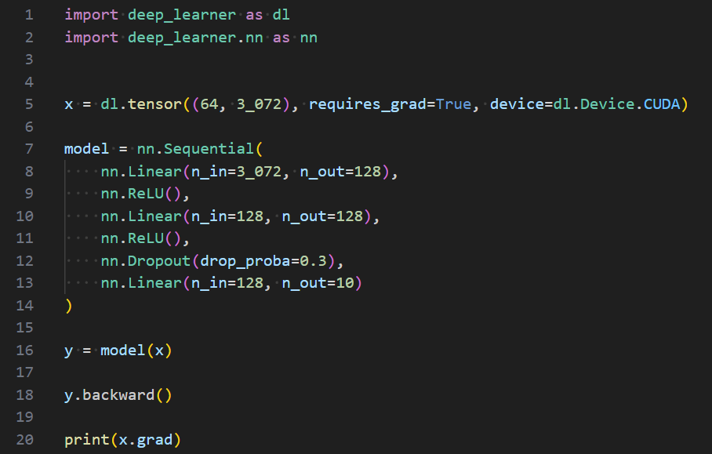

Deep Learner
What is Deep Learner ? At its core, Deep Learner is a reverse-mode automatic differentiation engine. We'll get to that part later, because we first need to address the elephant in the room : doesn't it look exactly like PyTorch (add link) ? Well, yes it does, and that's on purpose. Although the implementations are completely original, the public API of Deep Learner is, for the most part, taken from PyTorch. And why is that ? The first, honest reason is that I think PyTorch has a well-designed, intuitive and pratical API, so why not just keep it ? The other, more down-to-earth reason is that I want to be able to quickly switch from Deep Learner to PyTorch and vice-versa, which can be done seamlessly since they share a common public API.